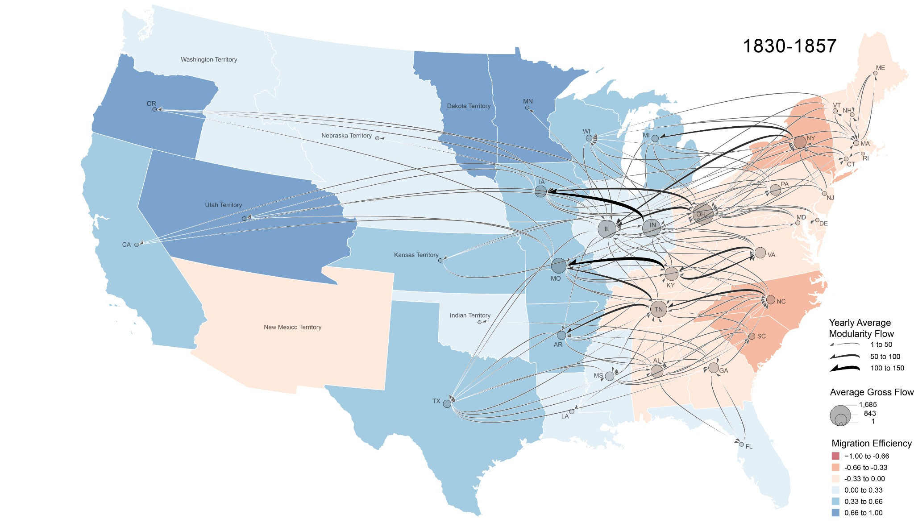

Population-Scale Kinship Networks & Migration
Our NSF-funded project constructs and analyzes large longitudinal family-tree networks to study migration, kinship, demographic change, representativeness, and historical spatial processes.
Explore related publications